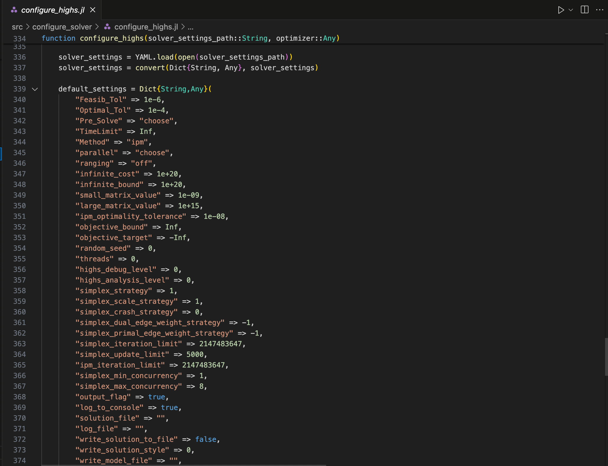
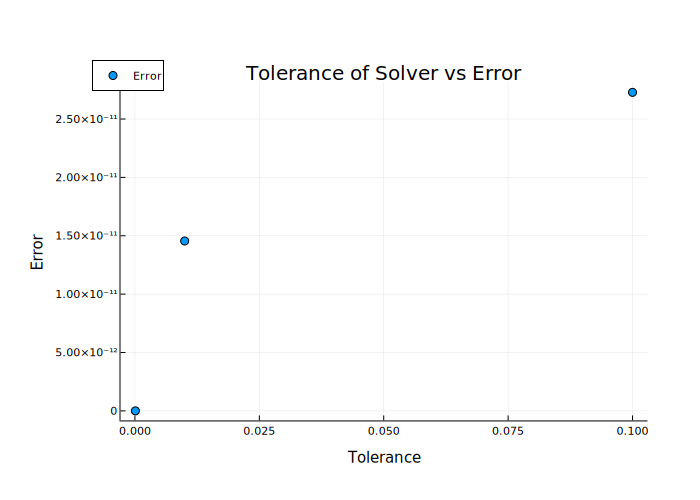

Tutorial 6: Solver Settings
Interactive Notebook of the tutorial
Though solving the model relies only on optimize, there are a number of ways to change the way in which the model is optimized. This tutorial goes over solver parameters and how they affect the model solution.
Table of Contents
using YAML
using GenX
using JuMP
using HiGHS
using DataFrames
using Plots
using Plotlycase = joinpath("example_systems/1_three_zones")
genx_settings = GenX.get_settings_path(case, "genx_settings.yml");
writeoutput_settings = GenX.get_settings_path(case, "output_settings.yml")
setup = GenX.configure_settings(genx_settings,writeoutput_settings)
settings_path = GenX.get_settings_path(case) Configuring Settings
"example_systems/1_three_zones/settings"### Create TDR_Results
if "TDR_results" in cd(readdir,case)
rm(joinpath(case,"TDR_results"), recursive=true)
end
TDRpath = joinpath(case, setup["TimeDomainReductionFolder"])
system_path = joinpath(case, setup["SystemFolder"])
if setup["TimeDomainReduction"] == 1
GenX.prevent_doubled_timedomainreduction(system_path)
if !GenX.time_domain_reduced_files_exist(TDRpath)
println("Clustering Time Series Data (Grouped)...")
GenX.cluster_inputs(case, settings_path, setup)
else
println("Time Series Data Already Clustered.")
end
end
inputs = GenX.load_inputs(setup, case)The HiGHS Solver
In the example files, the solver is HiGHS. HiGHS is freely available for all to use. Other solvers, such as Gurobi, are available for free for academics. For the purpose of this tutorial, we will be focusing on HiGHS.
To set the solver preferences, go into the settings folder of your case and select the YAML file of the solver you're using.
settings_folder = cd(readdir,joinpath(case,"Settings")) # Print Settings folder 7-element Vector{String}:
".DS_Store"
"clp_settings.yml"
"cplex_settings.yml"
"genx_settings.yml"
"gurobi_settings.yml"
"highs_settings.yml"
"time_domain_reduction_settings.yml"highs_settings = YAML.load(open(joinpath(case,"Settings/highs_settings.yml"))) Dict{Any, Any} with 6 entries:
"Method" => "choose"
"Feasib_Tol" => 0.1
"run_crossover" => "on"
"TimeLimit" => 1.0e23
"Optimal_Tol" => 0.1
"Pre_Solve" => "choose"The function configure_highs in src/configure_solver contains a list of default settings for the HiGHS solver

There are about 80, so we'll only focus on a few for now. In most cases, you can leave the other settings on default.
The default settings are combined with the settings you specify in highs_settings.yml in configure_highs, which is called from configure_solver in run_genx_case_simple right before the model is generated.
Feasibility Tolerance
The parameters Feasib_Tol and Optimal_Tol represent the feasibility of the primal and dual functions respectively. Without going into too much detail, a dual function is an analagous formulation of the original ("primal") function whose objective value acts as a lower bound to the primal function. The objective value of the primal function is then the upper bound of the dual function. HiGHS will solve the dual and primal at each time step, then terminate when the solutions of the two are within a certain tolerance range. For more information on how this works specifically in HiGHS, see the HiGHS documentaion.
If we decrease the tolerance parameters, the objective value becomes closer to the "true" optimal value.
# Change tolerance, generate and solve model`
tols = [1e-7,1e-4,1e-2,1e-1]
OV = zeros(1,4)
for i in range(1,length(tols))
println(" ")
println("----------------------------------------------------")
println("Iteration ",i)
println("Tolerance = ",tols[i])
println("----------------------------------------------------")
highs_settings["Feasib_Tol"] = tols[i]
highs_settings["Optimal_Tol"] = tols[i]
YAML.write_file(joinpath(case,"settings/highs_settings.yml"), highs_settings)
OPTIMIZER1 = GenX.configure_solver(settings_path,HiGHS.Optimizer)
EP = GenX.generate_model(setup,inputs,OPTIMIZER1)
GenX.solve_model(EP,setup)
OV[i] = objective_value(EP)
endUsing the smallest tolerance as our base, we can see the error as the tolerance increases:
DataFrame([tols[2:end] abs.(OV[2:end] .- OV[1])],["Tolerance", "Error"])3×2 DataFrame
Row Tolerance Error
Float64 Float64
───────────────────────────
1 0.0001 0.0
2 0.01 1.81899e-12
3 0.1 3.45608e-11using Plots
using Plotly# Plot the error as a function of the tolerance
plotlyjs()
Plots.scatter(tols[2:end], abs.(OV[2:end] .- OV[1]),legend=:topleft,
ylabel="Error", xlabel="Tolerance",size=(920,400),label=:"Error",title="Tolerance of Solver vs Error")
ygrid!(:on, :dashdot, 0.1)
PreSolve
In optimization, presolve is a stage at the beginning of the solver in which the problem is simplified to remove redunant constraints and otherwise simplify the problem before the optimization itself begins. The default for presolve in GenX is "choose", allowing the solver to use presolve only if it will reduce computation time.
Let's try setting presolve to off and on, then compare computation times.
# First, set tolerances back to original
highs_settings["Feasib_Tol"] = 1e-5
highs_settings["Optimal_Tol"] = 1e-5
YAML.write_file(joinpath(case,"Settings/highs_settings.yml"), highs_settings) highs_settings["Pre_Solve"] = "off"
YAML.write_file(joinpath(case,"Settings/highs_settings.yml"), highs_settings)
OPTIMIZER2 = GenX.configure_solver(setup["Solver"], settings_path);
EP2 = GenX.generate_model(setup,inputs,OPTIMIZER2) Discharge Module
Non-served Energy Module
Investment Discharge Module
Unit Commitment Module
Emissions Module (for CO2 Policy modularization
Dispatchable Resources Module
Storage Resources Module
Storage Investment Module
Storage Core Resources Module
Storage Resources with Symmetric Charge/Discharge Capacity Module
Thermal (Unit Commitment) Resources Module
C02 Policies Module
Energy Share Requirement Policies Module
Capacity Reserve Margin Policies Module
Minimum Capacity Requirement Module
Maximum Capacity Requirement Module
A JuMP Model
Minimization problem with:
Variables: 18492
Objective function type: AffExpr
`AffExpr`-in-`MathOptInterface.EqualTo{Float64}`: 5544 constraints
`AffExpr`-in-`MathOptInterface.GreaterThan{Float64}`: 7398 constraints
`AffExpr`-in-`MathOptInterface.LessThan{Float64}`: 27730 constraints
`VariableRef`-in-`MathOptInterface.EqualTo{Float64}`: 2 constraints
`VariableRef`-in-`MathOptInterface.GreaterThan{Float64}`: 18490 constraints
Model mode: AUTOMATIC
CachingOptimizer state: EMPTY_OPTIMIZER
Solver name: HiGHS
Names registered in the model: cCO2Emissions_systemwide, cCapacityResMargin, cESRShare, cMaxCap, cMaxCapEnergy, cMaxCapEnergyDuration, cMaxNSE, cMaxRetCommit, cMaxRetEnergy, cMaxRetNoCommit, cMinCap, cMinCapEnergy, cMinCapEnergyDuration, cNSEPerSeg, cPowerBalance, cSoCBalInterior, cSoCBalStart, cZoneMaxCapReq, cZoneMinCapReq, eCFix, eCFixEnergy, eCNSE, eCStart, eCVar_in, eCVar_out, eCapResMarBalance, eCapResMarBalanceStor, eCapResMarBalanceThermal, eCapResMarBalanceVRE, eELOSS, eELOSSByZone, eESR, eESRDischarge, eEmissionsByPlant, eEmissionsByZone, eExistingCap, eExistingCapEnergy, eGenerationByThermAll, eGenerationByVRE, eGenerationByZone, eMaxCapRes, eMaxCapResInvest, eMinCapRes, eMinCapResInvest, eObj, ePowerBalance, ePowerBalanceDisp, ePowerBalanceNse, ePowerBalanceStor, ePowerBalanceThermCommit, eTotalCFix, eTotalCFixEnergy, eTotalCNSE, eTotalCNSET, eTotalCNSETS, eTotalCStart, eTotalCStartT, eTotalCVarIn, eTotalCVarInT, eTotalCVarOut, eTotalCVarOutT, eTotalCap, eTotalCapEnergy, vCAP, vCAPENERGY, vCHARGE, vCO2Cap_slack, vCOMMIT, vNSE, vP, vRETCAP, vRETCAPENERGY, vS, vSHUT, vSTART, vZEROsolution2 = @elapsed GenX.solve_model(EP2,setup) Running HiGHS 1.6.0: Copyright (c) 2023 HiGHS under MIT licence terms
Solving LP without presolve or with basis
Using EKK dual simplex solver - serial
Iteration Objective Infeasibilities num(sum)
0 -4.3842305368e+02 Ph1: 19318(12391.6); Du: 5(438.423) 0s
18662 9.5083526285e+03 Pr: 3142(5018.36); Du: 0(0.000872182) 5s
23359 9.8583752055e+03 Pr: 0(0); Du: 0(1.27565e-13) 6s
Model status : Optimal
Simplex iterations: 23359
Objective value : 9.8583752055e+03
HiGHS run time : 6.77
LP solved for primal
6.84933975highs_settings["Pre_Solve"] = "on"
YAML.write_file(joinpath(case,"Settings/highs_settings.yml"), highs_settings)
OPTIMIZER3 = GenX.configure_solver(setup["Solver"], settings_path);
EP3 = GenX.generate_model(setup,inputs,OPTIMIZER3) Discharge Module
Non-served Energy Module
Investment Discharge Module
Unit Commitment Module
Emissions Module (for CO2 Policy modularization
Dispatchable Resources Module
Storage Resources Module
Storage Investment Module
Storage Core Resources Module
Storage Resources with Symmetric Charge/Discharge Capacity Module
Thermal (Unit Commitment) Resources Module
C02 Policies Module
Energy Share Requirement Policies Module
Capacity Reserve Margin Policies Module
Minimum Capacity Requirement Module
Maximum Capacity Requirement Module
A JuMP Model
Minimization problem with:
Variables: 18492
Objective function type: AffExpr
`AffExpr`-in-`MathOptInterface.EqualTo{Float64}`: 5544 constraints
`AffExpr`-in-`MathOptInterface.GreaterThan{Float64}`: 7398 constraints
`AffExpr`-in-`MathOptInterface.LessThan{Float64}`: 27730 constraints
`VariableRef`-in-`MathOptInterface.EqualTo{Float64}`: 2 constraints
`VariableRef`-in-`MathOptInterface.GreaterThan{Float64}`: 18490 constraints
Model mode: AUTOMATIC
CachingOptimizer state: EMPTY_OPTIMIZER
Solver name: HiGHS
Names registered in the model: cCO2Emissions_systemwide, cCapacityResMargin, cESRShare, cMaxCap, cMaxCapEnergy, cMaxCapEnergyDuration, cMaxNSE, cMaxRetCommit, cMaxRetEnergy, cMaxRetNoCommit, cMinCap, cMinCapEnergy, cMinCapEnergyDuration, cNSEPerSeg, cPowerBalance, cSoCBalInterior, cSoCBalStart, cZoneMaxCapReq, cZoneMinCapReq, eCFix, eCFixEnergy, eCNSE, eCStart, eCVar_in, eCVar_out, eCapResMarBalance, eCapResMarBalanceStor, eCapResMarBalanceThermal, eCapResMarBalanceVRE, eELOSS, eELOSSByZone, eESR, eESRDischarge, eEmissionsByPlant, eEmissionsByZone, eExistingCap, eExistingCapEnergy, eGenerationByThermAll, eGenerationByVRE, eGenerationByZone, eMaxCapRes, eMaxCapResInvest, eMinCapRes, eMinCapResInvest, eObj, ePowerBalance, ePowerBalanceDisp, ePowerBalanceNse, ePowerBalanceStor, ePowerBalanceThermCommit, eTotalCFix, eTotalCFixEnergy, eTotalCNSE, eTotalCNSET, eTotalCNSETS, eTotalCStart, eTotalCStartT, eTotalCVarIn, eTotalCVarInT, eTotalCVarOut, eTotalCVarOutT, eTotalCap, eTotalCapEnergy, vCAP, vCAPENERGY, vCHARGE, vCO2Cap_slack, vCOMMIT, vNSE, vP, vRETCAP, vRETCAPENERGY, vS, vSHUT, vSTART, vZEROsolution3 = @elapsed GenX.solve_model(EP3,setup) Running HiGHS 1.6.0: Copyright (c) 2023 HiGHS under MIT licence terms
Presolving model
35947 rows, 17464 cols, 136177 nonzeros
34470 rows, 15991 cols, 136110 nonzeros
Presolve : Reductions: rows 34470(-6202); columns 15991(-2501); elements 136110(-29848)
Solving the presolved LP
Using EKK dual simplex solver - serial
Iteration Objective Infeasibilities num(sum)
0 -2.9011432493e+00 Ph1: 118(557.293); Du: 15(2.90114) 0s
16445 9.8583752055e+03 Pr: 0(0); Du: 0(1.25316e-13) 4s
Solving the original LP from the solution after postsolve
Model status : Optimal
Simplex iterations: 16445
Objective value : 9.8583752055e+03
HiGHS run time : 4.55
LP solved for primal
4.655439792As we can see, the runtime with PreSolve is shorter, and would be even shorter for a larger system. However, it could introduce numerical inaccuracies. If you find the model is struggling to converge, try turn PreSolve off.
# Write PreSolve back to choose
highs_settings["Pre_Solve"] = "choose"
YAML.write_file(joinpath(case,"Settings/highs_settings.yml"), highs_settings)Crossover
Crossover is a method in which, at each step of the optimization algorithm, the solution is pushed to the boundary of the solution space. This allows for a potentially more accurate solution, but can be computationally intensive. Let's try turning crossover on and off and see what solutions we get:
highs_settings["run_crossover"] = "off"
YAML.write_file(joinpath(case,"Settings/highs_settings.yml"), highs_settings)
OPTIMIZER4 = GenX.configure_solver(setup["Solver"], settings_path);
EP4 = GenX.generate_model(setup,inputs,OPTIMIZER4) Discharge Module
Non-served Energy Module
Investment Discharge Module
Unit Commitment Module
Emissions Module (for CO2 Policy modularization
Transmission Module
Dispatchable Resources Module
Storage Resources Module
Storage Investment Module
Storage Core Resources Module
Storage Resources with Symmetric Charge/Discharge Capacity Module
Thermal (Unit Commitment) Resources Module
C02 Policies Module
Minimum Capacity Requirement Module
A JuMP Model
Minimization problem with:
Variables: 83192
Objective function type: AffExpr
`AffExpr`-in-`MathOptInterface.EqualTo{Float64}`: 24024 constraints
`AffExpr`-in-`MathOptInterface.GreaterThan{Float64}`: 20334 constraints
`AffExpr`-in-`MathOptInterface.LessThan{Float64}`: 103509 constraints
`VariableRef`-in-`MathOptInterface.EqualTo{Float64}`: 4 constraints
`VariableRef`-in-`MathOptInterface.GreaterThan{Float64}`: 79492 constraints
Model mode: AUTOMATIC
CachingOptimizer state: EMPTY_OPTIMIZER
Solver name: HiGHS
Names registered in the model: cCO2Emissions_systemwide, cMaxCap, cMaxCapEnergy, cMaxCapEnergyDuration, cMaxFlow_in, cMaxFlow_out, cMaxLineReinforcement, cMaxNSE, cMaxRetCommit, cMaxRetEnergy, cMaxRetNoCommit, cMinCap, cMinCapEnergy, cMinCapEnergyDuration, cNSEPerSeg, cPowerBalance, cSoCBalInterior, cSoCBalStart, cTAuxLimit, cTAuxSum, cTLoss, cZoneMinCapReq, eAvail_Trans_Cap, eCFix, eCFixEnergy, eCNSE, eCStart, eCVar_in, eCVar_out, eELOSS, eELOSSByZone, eEmissionsByPlant, eEmissionsByZone, eExistingCap, eExistingCapEnergy, eGenerationByThermAll, eGenerationByVRE, eGenerationByZone, eLosses_By_Zone, eMinCapRes, eMinCapResInvest, eNet_Export_Flows, eObj, ePowerBalance, ePowerBalanceDisp, ePowerBalanceLossesByZone, ePowerBalanceNetExportFlows, ePowerBalanceNse, ePowerBalanceStor, ePowerBalanceThermCommit, eTotalCFix, eTotalCFixEnergy, eTotalCNSE, eTotalCNSET, eTotalCNSETS, eTotalCNetworkExp, eTotalCStart, eTotalCStartT, eTotalCVarIn, eTotalCVarInT, eTotalCVarOut, eTotalCVarOutT, eTotalCap, eTotalCapEnergy, eTransMax, vCAP, vCAPENERGY, vCHARGE, vCO2Cap_slack, vCOMMIT, vFLOW, vNEW_TRANS_CAP, vNSE, vP, vRETCAP, vRETCAPENERGY, vS, vSHUT, vSTART, vTAUX_NEG, vTAUX_POS, vTLOSS, vZEROsolution4 = @elapsed GenX.solve_model(EP4,setup) Running HiGHS 1.6.0: Copyright (c) 2023 HiGHS under MIT licence terms
Presolving model
123675 rows, 81174 cols, 478190 nonzeros
116575 rows, 74076 cols, 478470 nonzeros
Presolve : Reductions: rows 116575(-31292); columns 74076(-9116); elements 478470(-75676)
Solving the presolved LP
Using EKK dual simplex solver - serial
Iteration Objective Infeasibilities num(sum)
0 1.9243583242e+03 Pr: 5545(9397.81); Du: 0(3.92542e-09) 0s
13530 2.9999821788e+03 Pr: 30131(9.49605e+06); Du: 0(0.0013131) 5s
17547 3.5484267823e+03 Pr: 19414(952045); Du: 0(0.00175439) 10s
20723 4.7298157079e+03 Pr: 29321(991206); Du: 0(0.00183106) 15s
23580 5.7123748112e+03 Pr: 32150(7.12339e+06); Du: 0(0.00148821) 21s
26170 6.1864339355e+03 Pr: 23825(7.35638e+06); Du: 0(0.00149712) 26s
29149 6.6441899572e+03 Pr: 27775(3.51868e+06); Du: 0(0.00148729) 31s
31348 6.8846964690e+03 Pr: 35484(2.8051e+06); Du: 0(0.00139557) 36s
33603 6.9920173954e+03 Pr: 24118(2.03558e+06); Du: 0(0.00124593) 42s
35671 7.2015870783e+03 Pr: 34108(1.48506e+07); Du: 0(0.00155189) 47s
37885 7.4048679609e+03 Pr: 31619(4.35123e+07); Du: 0(0.00179926) 52s
40109 7.6356641465e+03 Pr: 25843(2.88592e+06); Du: 0(0.00205301) 58s
42353 7.8375259516e+03 Pr: 31443(8.49023e+06); Du: 0(0.00226205) 64s
45258 8.1692860958e+03 Pr: 37870(5.26412e+06); Du: 0(0.00255441) 69s
48083 8.3152673717e+03 Pr: 40961(1.14875e+07); Du: 0(0.00294817) 75s
50545 8.4510258333e+03 Pr: 30790(3.72272e+08); Du: 0(0.00304629) 80s
52861 8.5807507297e+03 Pr: 22492(930796); Du: 0(0.00320519) 85s
54980 8.6629986832e+03 Pr: 30776(2.08885e+07); Du: 0(0.00337039) 91s
57333 8.7549581833e+03 Pr: 26257(1.13046e+06); Du: 0(0.00357615) 96s
59389 8.8000584935e+03 Pr: 36678(2.40379e+06); Du: 0(0.00364701) 101s
61669 8.8767323679e+03 Pr: 35715(2.44371e+06); Du: 0(0.00390224) 107s
63914 8.9782186363e+03 Pr: 43654(3.60725e+06); Du: 0(0.00423026) 113s
66084 9.0603325781e+03 Pr: 22220(2.48776e+06); Du: 0(0.00410399) 118s
69022 9.1231092369e+03 Pr: 22727(1.78641e+06); Du: 0(0.00444875) 124s
71953 9.1538574545e+03 Pr: 22264(5.37124e+06); Du: 0(0.00461629) 129s
74846 9.1867207120e+03 Pr: 26970(1.49142e+06); Du: 0(0.00477614) 135s
77129 9.2058130738e+03 Pr: 0(0); Du: 0(0.00107487) 140s
77129 9.2058130738e+03 Pr: 0(0); Du: 0(0.00107487) 140s
Using EKK dual simplex solver - serial
Iteration Objective Infeasibilities num(sum)
77129 9.2058130738e+03 Pr: 1(0.000235421); Du: 0(0.000836801) 140s
77136 9.2058130749e+03 Pr: 0(0); Du: 0(0.000836801) 140s
77136 9.2058130749e+03 Pr: 0(0); Du: 0(0.000836801) 140s
Solving the original LP from the solution after postsolve
Model status : Optimal
Simplex iterations: 77136
Objective value : 9.2058130749e+03
HiGHS run time : 140.51
LP solved for primal
140.762363highs_settings["run_crossover"] = "on"
YAML.write_file(joinpath(case,"Settings/highs_settings.yml"), highs_settings)
OPTIMIZER5 = GenX.configure_solver(setup["Solver"], settings_path);
EP5 = GenX.generate_model(setup,inputs,OPTIMIZER5) Discharge Module
Non-served Energy Module
Investment Discharge Module
Unit Commitment Module
Emissions Module (for CO2 Policy modularization
Transmission Module
Dispatchable Resources Module
Storage Resources Module
Storage Investment Module
Storage Core Resources Module
Storage Resources with Symmetric Charge/Discharge Capacity Module
Thermal (Unit Commitment) Resources Module
C02 Policies Module
Minimum Capacity Requirement Module
A JuMP Model
Minimization problem with:
Variables: 83192
Objective function type: AffExpr
`AffExpr`-in-`MathOptInterface.EqualTo{Float64}`: 24024 constraints
`AffExpr`-in-`MathOptInterface.GreaterThan{Float64}`: 20334 constraints
`AffExpr`-in-`MathOptInterface.LessThan{Float64}`: 103509 constraints
`VariableRef`-in-`MathOptInterface.EqualTo{Float64}`: 4 constraints
`VariableRef`-in-`MathOptInterface.GreaterThan{Float64}`: 79492 constraints
Model mode: AUTOMATIC
CachingOptimizer state: EMPTY_OPTIMIZER
Solver name: HiGHS
Names registered in the model: cCO2Emissions_systemwide, cMaxCap, cMaxCapEnergy, cMaxCapEnergyDuration, cMaxFlow_in, cMaxFlow_out, cMaxLineReinforcement, cMaxNSE, cMaxRetCommit, cMaxRetEnergy, cMaxRetNoCommit, cMinCap, cMinCapEnergy, cMinCapEnergyDuration, cNSEPerSeg, cPowerBalance, cSoCBalInterior, cSoCBalStart, cTAuxLimit, cTAuxSum, cTLoss, cZoneMinCapReq, eAvail_Trans_Cap, eCFix, eCFixEnergy, eCNSE, eCStart, eCVar_in, eCVar_out, eELOSS, eELOSSByZone, eEmissionsByPlant, eEmissionsByZone, eExistingCap, eExistingCapEnergy, eGenerationByThermAll, eGenerationByVRE, eGenerationByZone, eLosses_By_Zone, eMinCapRes, eMinCapResInvest, eNet_Export_Flows, eObj, ePowerBalance, ePowerBalanceDisp, ePowerBalanceLossesByZone, ePowerBalanceNetExportFlows, ePowerBalanceNse, ePowerBalanceStor, ePowerBalanceThermCommit, eTotalCFix, eTotalCFixEnergy, eTotalCNSE, eTotalCNSET, eTotalCNSETS, eTotalCNetworkExp, eTotalCStart, eTotalCStartT, eTotalCVarIn, eTotalCVarInT, eTotalCVarOut, eTotalCVarOutT, eTotalCap, eTotalCapEnergy, eTransMax, vCAP, vCAPENERGY, vCHARGE, vCO2Cap_slack, vCOMMIT, vFLOW, vNEW_TRANS_CAP, vNSE, vP, vRETCAP, vRETCAPENERGY, vS, vSHUT, vSTART, vTAUX_NEG, vTAUX_POS, vTLOSS, vZEROsolution5 = @elapsed GenX.solve_model(EP5,setup) Running HiGHS 1.6.0: Copyright (c) 2023 HiGHS under MIT licence terms
Presolving model
123675 rows, 81174 cols, 478190 nonzeros
116575 rows, 74076 cols, 478470 nonzeros
Presolve : Reductions: rows 116575(-31292); columns 74076(-9116); elements 478470(-75676)
Solving the presolved LP
Using EKK dual simplex solver - serial
Iteration Objective Infeasibilities num(sum)
0 1.9243583242e+03 Pr: 5545(9397.81); Du: 0(3.92542e-09) 0s
13530 2.9999821788e+03 Pr: 30131(9.49605e+06); Du: 0(0.0013131) 5s
17547 3.5484267823e+03 Pr: 19414(952045); Du: 0(0.00175439) 10s
20723 4.7298157079e+03 Pr: 29321(991206); Du: 0(0.00183106) 15s
23580 5.7123748112e+03 Pr: 32150(7.12339e+06); Du: 0(0.00148821) 21s
26170 6.1864339355e+03 Pr: 23825(7.35638e+06); Du: 0(0.00149712) 26s
29149 6.6441899572e+03 Pr: 27775(3.51868e+06); Du: 0(0.00148729) 31s
31348 6.8846964690e+03 Pr: 35484(2.8051e+06); Du: 0(0.00139557) 36s
33603 6.9920173954e+03 Pr: 24118(2.03558e+06); Du: 0(0.00124593) 42s
35671 7.2015870783e+03 Pr: 34108(1.48506e+07); Du: 0(0.00155189) 47s
37885 7.4048679609e+03 Pr: 31619(4.35123e+07); Du: 0(0.00179926) 52s
40109 7.6356641465e+03 Pr: 25843(2.88592e+06); Du: 0(0.00205301) 58s
42353 7.8375259516e+03 Pr: 31443(8.49023e+06); Du: 0(0.00226205) 63s
45258 8.1692860958e+03 Pr: 37870(5.26412e+06); Du: 0(0.00255441) 69s
48083 8.3152673717e+03 Pr: 40961(1.14875e+07); Du: 0(0.00294817) 75s
50545 8.4510258333e+03 Pr: 30790(3.72272e+08); Du: 0(0.00304629) 80s
52861 8.5807507297e+03 Pr: 22492(930796); Du: 0(0.00320519) 85s
54980 8.6629986832e+03 Pr: 30776(2.08885e+07); Du: 0(0.00337039) 91s
57333 8.7549581833e+03 Pr: 26257(1.13046e+06); Du: 0(0.00357615) 96s
59389 8.8000584935e+03 Pr: 36678(2.40379e+06); Du: 0(0.00364701) 101s
61669 8.8767323679e+03 Pr: 35715(2.44371e+06); Du: 0(0.00390224) 107s
63914 8.9782186363e+03 Pr: 43654(3.60725e+06); Du: 0(0.00423026) 113s
66084 9.0603325781e+03 Pr: 22220(2.48776e+06); Du: 0(0.00410399) 118s
69022 9.1231092369e+03 Pr: 22727(1.78641e+06); Du: 0(0.00444875) 124s
71953 9.1538574545e+03 Pr: 22264(5.37124e+06); Du: 0(0.00461629) 129s
74408 9.1814081583e+03 Pr: 29329(5.2193e+06); Du: 0(0.00473215) 134s
77012 9.2060247446e+03 Pr: 0(0); Du: 0(0.00509972) 140s
77129 9.2058130738e+03 Pr: 0(0); Du: 0(0.00107487) 140s
77129 9.2058130738e+03 Pr: 0(0); Du: 0(0.00107487) 140s
Using EKK dual simplex solver - serial
Iteration Objective Infeasibilities num(sum)
77129 9.2058130738e+03 Pr: 1(0.000235421); Du: 0(0.000836801) 140s
77136 9.2058130749e+03 Pr: 0(0); Du: 0(0.000836801) 140s
77136 9.2058130749e+03 Pr: 0(0); Du: 0(0.000836801) 140s
Solving the original LP from the solution after postsolve
Model status : Optimal
Simplex iterations: 77136
Objective value : 9.2058130749e+03
HiGHS run time : 140.44
LP solved for primal
140.74829025